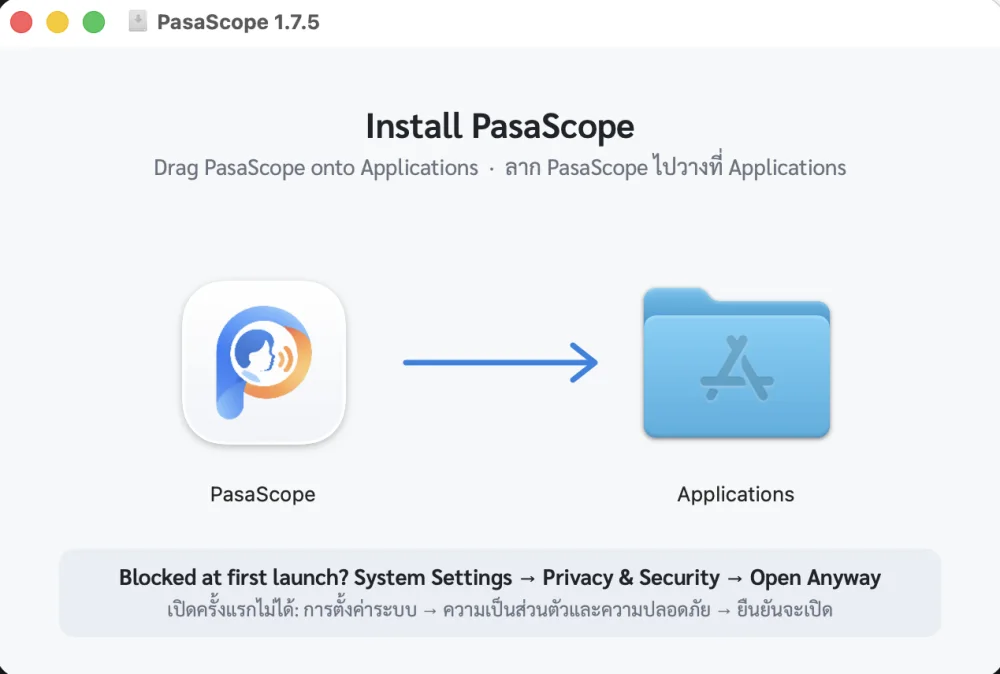

Mac For this computerสำหรับเครื่องนี้
Apple silicon (M1 or later) · macOS 12+ · about 5 GB freeชิป Apple (M1 ขึ้นไป) · macOS 12 ขึ้นไป · พื้นที่ว่างประมาณ 5 GB
Download .dmgดาวน์โหลด .dmgHow to installวิธีติดตั้ง
- Open the .dmg, drag PasaScope onto Applications along the arrow, then eject it in Finder.เปิดไฟล์ .dmg ลาก PasaScope ไปวางบน Applications ตามลูกศร แล้วกดดีดออก (⏏) ใน Finder
- PasaScope is not notarised by Apple yet, so macOS blocks the first launch, once: open it and click Done, then System Settings → Privacy & Security → Open Anyway, and enter your password. On macOS 12–14, right-click PasaScope and choose Open.PasaScope ยังไม่ได้ลงทะเบียนกับ Apple ครั้งแรก macOS จึงปิดกั้น ทำครั้งเดียว: เปิดแล้วกด เสร็จสิ้น ไปที่ การตั้งค่าระบบ → ความเป็นส่วนตัวและความปลอดภัย กด ยืนยันจะเปิด แล้วใส่รหัสผ่าน (macOS 12–14 คลิกขวาแล้วเลือก เปิด)
- A short walkthrough asks for your name (it signs attestations and reports), then downloads the Thai speech model, about 1.5 GB, once.หน้าแนะนำจะถามชื่อของคุณ (ใช้รับรองและลงนาม) แล้วดาวน์โหลดโมเดลถอดเสียงภาษาไทย ประมาณ 1.5 GB ครั้งเดียว
- Intel Macs are not supported yet.ยังไม่รองรับ Mac ชิป Intel
